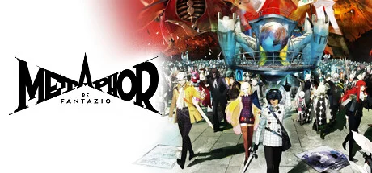

Atlus 全新 IP，奇幻风格 RPG，来自《女神异闻录》系列核心团队。

想象一片八个种族在歧视与融合中共存的中世纪奇幻大陆——联合王国 Euchronia。Elda 族尖耳被嘲笑、Roussainte 族有翼被神化、Mustari 族长尾被驱逐、Paripus 族毛皮被审视——种族即偏见，种族即政治。国王突然遇刺，联合王国宣布了史无前例的王位选举：任何人都可以参选，只要你能赢得民心。从王都的大教堂到边境的麦田，竞选海报满天飞舞、辩论台林立、种族分裂被推上前台——整个国家陷入政治动员的奇幻嘉年华。
你是Elda 族旅人——一名受歧视尖耳种族的青年，肩负一个秘密使命：拯救被诅咒沉睡的王子。要解开诅咒就必须接近王权核心——所以你以最荒谬的方式进入舞台中心：报名参选王位。精灵伙伴 Gallica、骑士 Strohl、女骑兵 Hulkenberg 和你一起，乘坐巨型机械王城 Gauntlet Runner 跨越大陆。每位候选人都是意识形态的化身——种族至上、平民革命、神权复辟、武力征服——这场选举不是政治游戏，是奇幻世界版的意识形态战争。
那次你第一次切换 Archetype 看见战士铠甲在副島成記笔下涌现的瞬间，Atlus 美术哲学从 Persona 现代东京一脚跨进中世纪奇幻让 JRPG 玩家集体起立鼓掌；那场你在大教堂辩论台上和反派候选人正面对决的桥段——民意条数字一格格跳动，回合制战斗第一次和政治演说重叠在一起；那段你在 Gauntlet Runner 甲板上和同伴吃晚餐看夕阳的桥段，Persona 的羁绊系统在中世纪外壳下重新长出奇幻肌理。这不是关于救公主的故事，是「奇幻世界里民主到底是不是骗局」的故事——投票日倒计时已经在响了，今天去拉哪个种族的票？
中世纪油画 × Atlus 扁平风格化，是 Atlus 把欧洲文艺复兴前期的油画质感（厚重笔触、细密金线、宗教祭坛画构图）和副島成記标志性的扁平风格化角色设计（黑线轮廓、纯色块、强烈版面感）反差地缝合在中世纪奇幻舞台上的混血美学。底色是祭坛画式的庄严宗教感；变异在于UI 用大字号衬线体+几何网点继承 Persona 5 的版面攻击力。色彩锁定祭坛金 + 王权深红 + Atlus 蓝三色组合。
Atlus 的奇幻演化跨越了三十多年。1992 年《真·女神转生》定义了 Atlus 的恶魔合成+黑色现代奇幻基因。2006 年《女神异闻录 3》开启 Persona 系列的日历制+羁绊系统。2008 年《女神异闻录 4》把这套范式推到经典。2016 年《女神异闻录 5》（副島成記）以扁平风格化 UI+东京潮流震惊业界，定义了当代风格化 RPG 的视觉天花板。2017 年《宝石之国》动画把无机质奇幻+扁平美学推到主流。1986 年起JoJo 系列定义了「姿势即意识形态」的奇幻角色范式，是副島成記的远期养分。2024 年《暗喻幻想》正式发售——Atlus 把 Persona 后的视觉资产一脚跨进中世纪奇幻，证明副島成記的扁平风格化可以驾驭从现代东京到中世纪王国的任何题材。
基于体验清单 · 审美偏好 · IP故事三维度综合选出
点击链接跳转到对应平台查看 · 仅整理外部链接